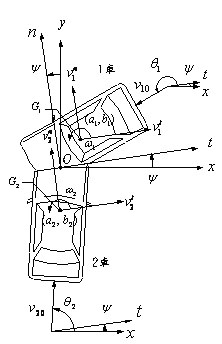
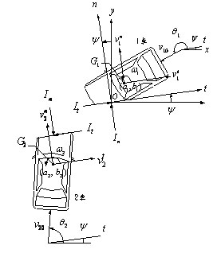

|
—般模型比點質量模型多考慮了轉動效應。 |
|
 圖1 |
 圖2 |
| 正推法的步驟大致如下： (1) 根據跡証，決定碰撞點、碰撞方向、碰撞位置、煞車距離。 (2) 從碰撞車的車面決定碰撞面方向、碰撞中心之位置，由此可決定質心至碰撞中心。 (3) 輸入兩車的質量、尺寸及有關數據。 (4) 決定可能知道的速度量及汽車速度方向，例如碰撞前車的角速度常為零。 (5) 決定恢復係數e及衝量比 。 (6) 利用已知的數據作碰撞分析。 (7) 改變初始速度直到碰撞後的資訊與實際接近相等。 |
|
| 反推法的步驟前三項與正推法相同，接著便是利用已知煞車痕跡計算出碰撞後車速，再反推出碰撞前車速。 |